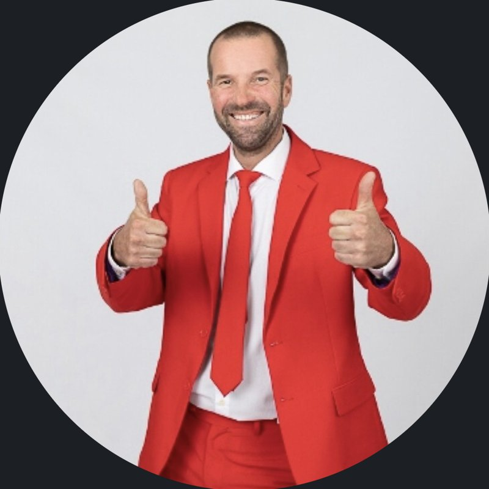
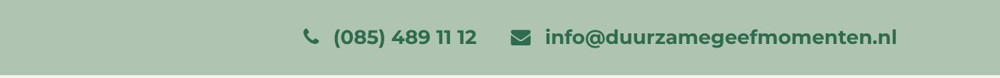

Kadoburo · Nieuw-Vennep

Hoi Patrick,Je vroeg ons twee dingen over duurzamegeefmomenten.nl. Ruben zocht het uit, inclusief de concurrenten uit jouw lijst.
Bovenaan elke pagina staat info@duurzamegeefmomenten.nl. Wie erop klikt, opent een mail aan het voorbeeldadres van het WordPress-thema Total. Een inkoper die zo een aanvraag stuurt, hoort nooit iets terug.

De copyright-link gaat naar duurzamegeefmomenten.nl/duurzamegeefmomenten.nl en de "Design by"-link naar een pagina die niet bestaat. Beide geven een foutmelding (404).
De kop "Duurzame relatiegeschenken voor organisaties die vooruitdenken" is op de telefoon verborgen. Je ziet alleen een product en een knop. De enige zichtbare hoofdkop is "Een kijkje in onze keuken".
Google raadt nu zelf waar de pagina's over gaan. De hoofdkop van de homepage staat als H3 in de code.
De slider draait op afbeeldingen die home-test.png en hometest2.png heten. Daarnaast staan er tags als "pineut" en "F1" in de tagwolk.
Duurzame Geefmomenten, Kadoburo en Moments for you lopen door elkaar. Privacy, voorwaarden en retour staan op kadoburo.nl. Voor een nieuwe bezoeker is niet duidelijk wie de leverancier is.
Jullie hebben kadoburo.nl voor het brede aanbod. Dan mag duurzamegeefmomenten.nl streng zijn: wie hier bestelt, koopt altijd iets duurzaams. Nu klopt dat bij ruim de helft van de producten niet.
Hoe we telden: alle 467 producten uit de shop, gezocht op termen als biologisch, fairtrade, gerecycled, FSC, bamboe, vegan, circulair, gered en duurzaam. Een ruwe telling op tekst: een product kan duurzamer zijn dan er staat. Dan is het advies hetzelfde: zet het erbij.
"Wat geen label krijgt, gaat naar kadoburo.nl."
Zo blijft duurzamegeefmomenten.nl een site waar een inkoper blind op kan vertrouwen, en verlies je geen omzet: het brede aanbod staat een klik verderop.Op jullie Over ons-pagina noemen jullie deze producten. In de shop vinden we ze niet terug: geen van de 467 producten is van geredde of restproducten gemaakt.
van restgroenten
van oud brood
van geredde aardappelen
Leveren jullie die? Dan is dát jullie sterkste verhaal. Geen van de zes concurrenten maakt van geredde producten het hoofdverhaal. Dan bouwen we er pakketten, een makerspagina en per bestelling een impactoverzicht omheen.
Leveren jullie die niet (meer)? Dan halen we ze van de Over ons-pagina. Een belofte die de shop niet waarmaakt, kost vertrouwen.
En die haak staat bij hen direct op de homepage, met klantlogo's en reviews eronder. Bij jullie ontbreekt dat nog allemaal.
| Partij | Belofte | Duurzame haak | Bewijs | Reviews |
|---|---|---|---|---|
| More Than Gifts | "Geschenken met impact", volledig ontzorgd | Sociale werkplaatsen | Sterk: ISO, PSO trede 3, EcoVadis, CO2-rapportages | Kiyoh 9,1 tot 9,2 en A-merk logo's |
| BEWUSTBOX | Kerstpakket "waar ze écht wat aan hebben" | Boom per pakket | Zwak: geen totalen | "9+" zonder bron, logo's |
| YoKado | "Kerstpakketten die écht bij je team passen" | Lokaal, 80 Friese makers | Zwak: "34 bomen in 2022" | Google 4,6 (13) |
| Greengiving | Bedrukte eco-giveaways | Green Score per product | Gemiddeld: EcoVadis Zilver | Trusted Shops 9,6 (442) |
| Duurzamekerstpakketten.com | Kerstpakketten uit showroom, sinds 1995 | Groene logistiek | Zwak: algemene MVO-tekst | 2 testimonials |
| SocialGoodz | Relatiegeschenken met logo en sociale impact | Sociale werkplaatsen | Onbekend | Niet gevonden |
| Duurzame Geefmomenten | "Voor organisaties die vooruitdenken" | Nog geen keuze | Geen: ruim de helft zonder duurzaam kenmerk | Geen |
Eén naam uit jullie lijst konden we niet vinden (purelabsl.nl). Welke partij bedoelden jullie? Dan nemen we die mee. SocialGoodz was niet volledig te bekijken; dat profiel is gebaseerd op zoekresultaten.
Niemand geeft de klant een impactrapport, bijvoorbeeld kilo's geredde voeding. Inkopers hebben dat nodig voor hun MVO-verslag.
Nergens zie je wie het product maakt. Juist bij duurzame producten ligt dat voor de hand.
Geredde en restproducten zijn bij geen enkele concurrent het hoofdverhaal.
Alleen More Than Gifts benoemt het dilemma van niet-duurzame producten. Wie bij elk product laat zien wat er duurzaam aan is, valt op.
Niemand laat inkopers op beide tegelijk filteren.
Volgens Ahrefs heeft duurzamegeefmomenten.nl nul rankings, nul verwijzende domeinen en nul bezoekers uit zoekmachines. De zoekwoorden waar het om draait zijn klein, maar makkelijk: met goede categoriepagina's is een nieuwe site er snel bij.
Ahrefs Site Explorer, Nederland, 9 oktober 2026. Schattingen.
| Zoekwoord | Per maand | Moeilijk | Nu bovenaan |
|---|---|---|---|
| duurzaam kerstpakket | 600 | 3 | More Than Gifts #1, BEWUSTBOX #3 |
| duurzame relatiegeschenken | 500 | 7 | Greengiving #2 |
| duurzaam relatiegeschenk | 300 | 6 | Greengiving #1 |
| duurzame relatiegeschenken met logo | 200 | 46 | Greengiving #2 |
| biologisch kerstpakket | 150 | 0 | Niemand uit deze set |
| duurzame kerstpakketten | 100 | 4 | More Than Gifts #1 |
| duurzaam cadeau personeel | 90 | 5 | Niemand uit deze set |
| fairtrade kerstpakket | 90 | 0 | SocialGoodz #2 |
| circulair kerstpakket | 0 |
Moeilijkheid op een schaal van 0 tot 100. Niemand zoekt op "circulair": dat is het verhaal, niet de paginanaam. Gebruik "duurzaam kerstpakket" als titel en vertel daaronder per pakket wat er duurzaam aan is.
De site is het fundament, maar het doel is meer bestellingen. Daarom in deze volgorde.
Net zoals we bij kadoburo.nl hebben opgeruimd.
De basis (A) is snel geregeld, en dan kan het kerstverhaal nog dit seizoen online. Zullen we even gaan zitten, bij jullie in de showroom of bij ons in de Bollenstreek?
Michel Goulmy, ditisABC · 023-3020409 · ditisabc.nl